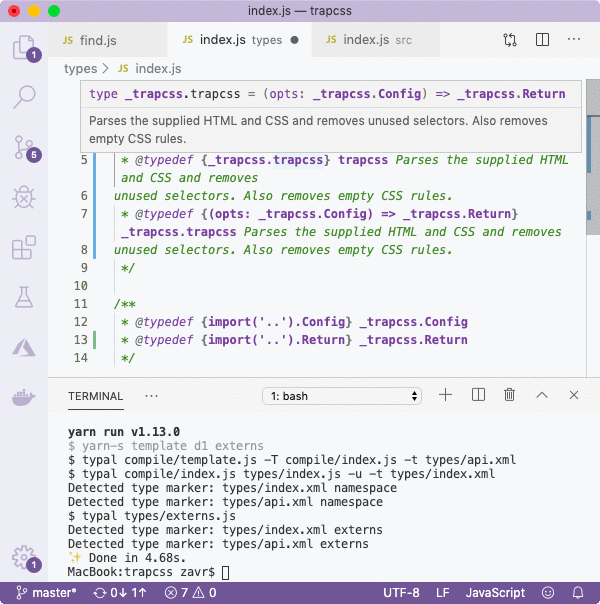

##! Adding Types
After we've copied the typedef, we'll want to write types that are relevant for our program. The main method accepts a hashmap config, so we'll document its structure in `types/index.xml`.
We're using the `_trapcss` namespace to be able to name our config as `_trapcss.Config` and distinguish it from other packages' configs that can be defined with the same name. The namespace is the feature of _VSCode_ that we use to our advantage, and it's not much different from standard typedefs, only that names of types are preceded with the `_ns`. We also use ``_`` underscore as the convention for namespaces' titles, otherwise there might be conflicts between them and some functions in the source code.
There are 3 main types of types: records, interfaces and constructors. The key point to remember is that records are used for configs and other simple objects passed between programs, while interfaces are used to describe methods and properties on classes, which are then annotated with `/* @implements {_ns.Type} */` in the source code. Unfortunately, _VSCode_ doesn't understand the implements notation and will not allow to "put meat" or grow implementation on the interface defined like that while providing hints during implementation process, but this notation is used to enable Closure Compiler type checking. Some examples of `@implements` can be found in the [Goa server](https://github.com/idiocc/goa/blob/4b4534c304870ace80a42245ac0303f85b6eb6d3/src/application.js#L18).
```js
/**
* @implements {_goa.Application}
*/
export default class Application extends EventEmitter {
/**
* Initialize a new `Application`.
* @param {!_goa.ApplicationOptions} options
*/
constructor(options = {}) {}
// if VSCode understood @implements, we wouldn't have to
// specify the type of the argument in @param as it could
// be deducted from the interface type ;)
}
```
The `...` block can be simplified to `...`, same with _interface_. Constructors are used very rarely.
If a type is defined without record/interface attribute, it becomes the simplest type in the _Closure_ type system called a *structural interface*, for example, `{ prop: string, prop2: (number|undefined) }`. An object like that is not nullable — since Closure tries to make JavaScript similar to Java, type nullability is a thing. More complex types, such as records and interfaces are nullable, whereas structural interfaces are not. Here's some more documentation on [types](closure-types). Therefore, when we use a record that is not expected to be nullable, we'll want to add `!` in front of it, as shown below.
Not only do we document config and return types in XML, but also the actual API contract of the library, which is placed in the *types/api.xml* file and describes all available methods that can be imported from our Node.JS library.
It's the core principle of _NodeTools_ to use XML to store types. You can view it as the design stage that provides a language- and tool-agnostic way to document our software, whereas JS is used for implementation later. We can reuse types for any purpose, such as creating documentation as shown later. Because types are not written in a complex proprietary format like .ts (TypeScript typings), anyone can make software that uses a simple XML parser to extract types, and build their own schema upon the existing one.
The next thing we want to do is to generate typedefs for _VSCode_ so that we can get working on the source code implementation. The template we used with _MNP_ already has the set up ready for that, we just call . This command will update typedefs in `types/index.js`, which are then imported in our source code. actually spawns multiple commands, including `template`, `d1` and `externs`. It will run `yarn-s` or `npm-s` for serial execution of those commands, but you might want to replace that to `npm-s`. We'll fix this in the next version of the template to accound
```js
export {}
/* typal types/api.xml namespace */
/**
* @typedef {_trapcss.trapcss} trapcss Parses the supplied HTML and CSS and removes
unused selectors. Also removes empty CSS rules.
* @typedef {(opts: _trapcss.Config) => _trapcss.Return} _trapcss.trapcss Parses the supplied HTML and CSS and removes
unused selectors. Also removes empty CSS rules.
*/
/**
* @typedef {import('..').Config} _trapcss.Config
*/
// 1) add the return import
/**
* @typedef {import('..').Return} _trapcss.Return
*/
```
The config is imported from the main JS of the package, which is kept in `compile/index.js`. We'll come back to that later, but we also need to import ``(1)`` the return type manually, as the template's function simply returned a string before. To check that it's been imported correctly, we simply hover over the top declaration.

This *types/index.js* file is only used for development purposes, and it's real aim is to provide an annotated function type that is then imported in the source code. We come back to the source code, find our implementation and annotate it with the type:
```js
// src/index.js
// adding @type
/**
* @type {_trapcss.trapcss}
*/
function dropcss(opts) {
let log, START
if (LOGGING) {
START = +new Date()
log = [[0, 'Start']]
}
// ... implementation
}
```
Make sure to remember to copy across that typedef with import:
```
/**
* @suppress {nonStandardJsDocs}
* @typedef {import('../types').trapcss} _trapcss.trapcss
*/
```
The *@suppress* is needed because Closure Compiler cannot parse imports in typedefs, so that we skip this warnings. However, this function type is also generated in externs which are fed to the Compiler when compiling packages, so that it will be aware of the type. When using namespaces, we need to be consistent with their namings: if we simply imported `trapcss` instead of `_trapcss.trapcss`, we'd receive access to _VSCode_ _JSDoc_, but the compiler wouldn't know about the `trapcss` type without the namespace.

The advantage of such annotation is that the comments will be lost during compilation anyway, so we don't have to waste time maintaining them in the source code itself. If we need to update the API contract, we go to the XML file, make changes there, and generate new annotations and externs using command. The externs look like the following:
The purpose of externs is to provide type information for Closure Compiler. When using advanced compilation, which we are, property names on objects will get renamed, which is not good when we publish the package with declared config type. By generating an extern, we're making sure that its properties are not renamed. *package.json* file also adds the `"externs": "types/externs.js"` field, so that 3rd party packages that want to compile our package into themselves, will receive access to its types for _Closure_. This is how _NodeTools_ infrastructure works.
Our standard is to use destructuring on the config to extract its properties for use in the program first thing. If the config was not compulsory, we'd also add `function (config={})`, but it's not the case here. When doing this, we also receive the type of the property, so that we're able to receive hints if we need to perform operations on this new objects.

On the screenshot above, you can see how the IDE provides me with autocompletion hint when I'm trying to get access to the `.length` property, for example to check that HTML is not empty. This is essential for developer experience of the person who's coding the package, so by simply importing the type, we were able to achieve this productivity without full _JSDoc_ with `@param {Object}` comments. Sadly, _VSCode_ does not show the description of the property, otherwise it'd be really perfect, but maybe they can do it in the next version.
So we just update the source code to pass destructured properties, and the new `keepAlternate` additional property to the ``parseCSS`` method. The `keepText` second argument for _parseHTML_ is not even accepted by this function, so we remove it.
```js
// const H = parseHTML(opts.html, !opts.keepText) =>
const H = parseHTML(html)
// const shouldDrop = opts.shouldDrop || drop =>
// default is now assigned via destructuing
// above { shouldDrop = drop, ... } = opts
// let tokens = parseCSS(opts.css) =>
let tokens = parseCSS(css, keepAlternate)
```